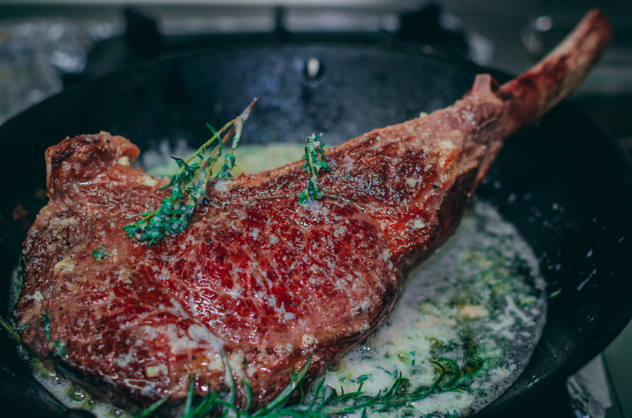

carne

- 1 pieza entera de tomahawk (800gr-1kg)
- 200g de mantequilla sin sal
- 7 u 8 cabezas de ajos
- 2 ramitas de tomillo fresco
- Sal gorda en escamas
- Pimienta negra recien molida
Calamar
- 1 pieza de calamar entera
- aceite de oliva virgen extra
- perejil
- ajo
- sal